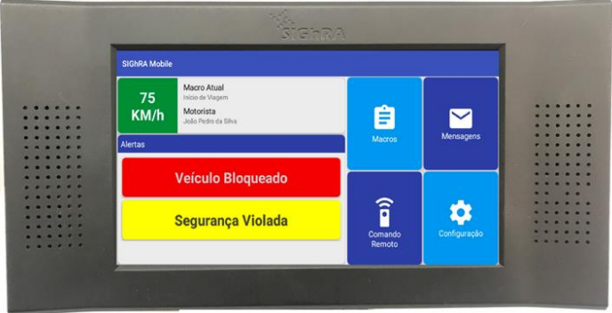

Informação para agir
com segurança.
Consulte os procedimentos essenciais das tecnologias de rastreamento, veja cada comando na prática e encontre respostas rápidas durante a operação.

Um ponto de consulta
para toda a operação.
Este portal ajuda o operador a consultar cada tecnologia e teclado usado no dia a dia. Aqui estão os manuais, os comandos essenciais e os procedimentos de desbloqueio sem sinal organizados conforme o treinamento central.
Manuais de teclado
Escolha a tecnologia para abrir o manual original do equipamento.
Nenhum teclado encontrado
Tente buscar por outra tecnologia.
Manuais de tecnologia
Manuais dos softwares e plataformas utilizados por cada tecnologia.
Nenhum manual encontrado
Tente buscar por outra tecnologia.
Desbloqueio sem sinal
Uso operacional controlado. O guia não exibe contrassenhas. Confirme placa, solicitante e autorização antes de agir.
Desbloqueio SIGHRA

Central de conteúdo
Gerencie manuais, procedimentos e o conhecimento operacional usado pelo Cosmo.
Entrar na Área ADM
Use as credenciais administrativas abaixo.
Treinamento Smart
Treinar com uma conversa simulada
Arquivos para o Cosmo
TXT, CSV, JSON e Markdown são lidos imediatamente. PDF, Excel e apresentações ficam registrados para processamento no servidor quando a integração corporativa for ativada.